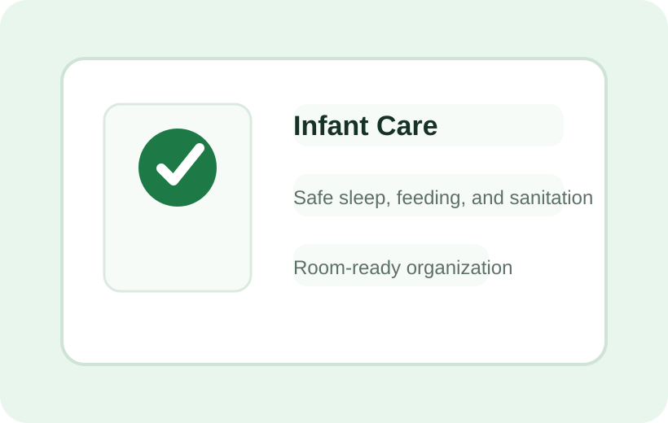

CribCheck™
Visual prompts and documentation support for safe sleep checks and crib readiness.
Infant Care Solutions
Support safe sleep checks, feeding routines, temperature awareness, and daily classroom organization with systems staff can follow at a glance.

Visual prompts and documentation support for safe sleep checks and crib readiness.
Organization tools for labeled bottles, feeding workflows, and classroom communication.
Pacifier identification and storage support to reduce mix-ups and simplify sanitation routines.
Practical drying and organization support for bibs and infant mealtime supplies.
Simple systems for tracking classroom laundry, soft goods, and daily cleaning needs.
Temperature check organization for health monitoring and classroom records.